Guia prático para começar com segurança, entender o sistema e ganhar autonomia.
Sobre esta edição
Entenda primeiro. Execute depois.
Este livro foi escrito para quem está começando. As telas usam Ubuntu LTS como referência visual, mas os princípios de segurança e aprendizagem continuam úteis em outras distribuições.
Comandos, screenshots e contas de exemplo foram preparados em ambientes controlados. Antes de qualquer ação que altere discos ou dados, confirme seu backup e leia a tela inteira.
Se você chegou até aqui pensando que Linux é difícil, cheio de comandos estranhos ou feito apenas para programadores, pode guardar uma coisa desde já: você não precisa saber tudo para começar.
Na prática, aprender Linux se parece muito mais com aprender a usar uma nova cidade do que com decorar um livro técnico. No início, você não conhece as ruas, os atalhos nem os nomes dos bairros. Depois de alguns dias, começa a reconhecer os caminhos. Com o tempo, aquilo que parecia confuso vira rotina.
É exatamente isso que vamos fazer juntos.
Você não precisa memorizar centenas de comandos. Também não precisa trocar de computador, abandonar tudo o que já usa ou se transformar em especialista. O que precisa é curiosidade, paciência e disposição para entender um passo de cada vez.
ENTENDA Linux não é uma prova. Você não ganha pontos por lembrar comandos de cabeça. O objetivo deste livro é fazer você entender o que está acontecendo para conseguir tomar decisões com segurança.
O que você vai encontrar neste livro
Ao longo dos próximos capítulos, você vai aprender a escolher uma distribuição, preparar o computador, instalar Linux com cuidado, conhecer o sistema, usar o terminal, trabalhar com arquivos e permissões e resolver problemas comuns sem sair copiando qualquer solução da internet.
A ideia é simples: primeiro entender, depois executar.
Três medos comuns — e por que eles não precisam mandar em você
“Linux é só para programadores”
Não é. Programadores usam Linux, assim como usam Windows e macOS. Servidores usam Linux. Empresas usam Linux. Pessoas comuns também usam Linux para navegar na internet, estudar, trabalhar, editar documentos, assistir vídeos e organizar arquivos.
Você pode aprender Linux sem escrever uma linha de código.
“Vou quebrar meu computador”
Algumas ações podem causar problemas se forem feitas sem cuidado. Isso é verdade em qualquer sistema operacional. Por isso, este livro não vai tratar risco como detalhe. Antes de qualquer etapa importante, você vai entender o que pode dar errado e como se proteger.
Backup, teste e leitura vêm antes da pressa.
ATENÇÃO Quando uma ação puder apagar arquivos, alterar partições ou modificar permissões importantes, isso será avisado de forma clara. Você nunca será incentivado a executar algo perigoso apenas para “ver o que acontece”.
“Eu não sou bom com terminal”
Ótimo: você não precisa ser.
O terminal será apresentado como uma ferramenta, não como um ritual de iniciação. Quando ele aparecer, vamos explicar o objetivo, o comando, o resultado esperado e o significado das partes importantes.
VOCÊ NÃO PRECISA DECORAR Saber consultar ajuda faz parte de saber usar Linux. Profissionais experientes também pesquisam opções, leem documentação e conferem comandos antes de executar.
Como usar este livro
Leia no seu ritmo. Quando encontrar uma prática, faça junto se tiver um ambiente seguro para testar. Se não tiver, leia primeiro e volte quando estiver preparado.
Não existe prêmio por terminar rápido. Existe valor em terminar entendendo.
Sempre que surgir uma palavra nova, tente relacioná-la com algo que você já conhece. Sistema operacional, distribuição, terminal, diretório, usuário e permissão vão parecer naturais depois de aparecerem algumas vezes no contexto certo.
DICA DO DEJOTA Se alguma parte parecer confusa, não avance por obrigação. Releia o exemplo, teste com calma e só depois continue. Tecnologia fica muito mais simples quando você para de tentar aprender tudo ao mesmo tempo.
Antes de começar
Você não precisa instalar nada agora.
O primeiro passo é entender o terreno. No próximo capítulo, vamos descobrir o que Linux realmente é, onde ele aparece e por que tanta gente usa esse sistema mesmo quando não percebe.
01
Capítulo 1
Linux sem medo: o que é e onde ele aparece
Onde estamos
Antes de escolher uma distribuição ou abrir um terminal, precisamos responder uma pergunta básica: afinal, o que é Linux?
Essa pergunta parece simples, mas ela costuma receber respostas cheias de termos técnicos. Vamos fazer diferente.
O que você vai conseguir fazer
Ao terminar este capítulo, você será capaz de explicar, em palavras simples, o que é Linux, reconhecer onde ele aparece e entender a diferença entre Linux e uma distribuição.
Você ainda não precisa instalar nada nem usar comandos.
Entenda antes de executar
Imagine um carro.
O motor é uma parte essencial, mas ninguém dirige apenas um motor. É preciso carroceria, painel, bancos, volante, pneus e vários outros componentes funcionando juntos.
Linux funciona de maneira parecida.
Quando falamos de Linux com mais precisão, estamos falando do núcleo do sistema, chamado kernel. Ele faz a ponte entre o hardware do computador e os programas que você usa.
O kernel conversa com processador, memória, discos, teclado, rede e outros dispositivos. Os programas dependem direta ou indiretamente dessa base para acessar recursos do computador. > ENTENDA > Pense no kernel como o responsável por organizar a conversa entre o que é físico e o que é software. Você normalmente não fala com ele diretamente, mas quase tudo passa por ele.
Linux não é apenas uma tela preta
Muita gente conhece Linux por imagens de terminais com letras passando na tela. Isso cria a impressão de que usar Linux significa abandonar janelas, botões e menus.
Não significa.
Hoje existem ambientes Linux com interface gráfica completa, navegador, loja de aplicativos, editor de documentos, ferramentas de vídeo, jogos e praticamente tudo o que um usuário comum espera de um computador moderno.
O terminal continua importante porque oferece uma forma direta e poderosa de conversar com o sistema. Mas ele é uma ferramenta entre várias — não a única forma de usar Linux.
Onde Linux aparece
Linux está em muitos lugares que você talvez use todos os dias sem perceber.
Ele é muito comum em servidores, equipamentos de rede e infraestrutura de nuvem. Também está presente em muitos dispositivos do dia a dia.
O próprio Android usa o kernel Linux como parte da sua base. Isso não significa que Android seja igual a uma distribuição Linux de desktop, mas mostra como esse núcleo pode servir a ambientes bem diferentes.
Então o que é uma distribuição?
Se o kernel é o motor, uma distribuição é o carro montado para um determinado tipo de uso.
Uma distribuição Linux reúne o kernel com programas, instalador, gerenciador de pacotes, interface gráfica, configurações e escolhas feitas por uma comunidade ou empresa.
Ubuntu, Linux Mint, Fedora e Debian são exemplos de distribuições. Elas compartilham a base Linux, mas podem organizar a experiência de formas diferentes.
Essa é uma das razões pelas quais iniciantes se confundem: procuram “baixar o Linux” e encontram dezenas de nomes.
Você não precisa estudar todos eles.
No próximo capítulo, vamos escolher uma primeira distribuição usando critérios simples: facilidade, estabilidade, compatibilidade com seu equipamento e quantidade de ajuda disponível.
VOCÊ NÃO PRECISA DECORAR Kernel, distribuição e ambiente gráfico são conceitos diferentes. Por enquanto, basta guardar a ideia: O kernel Linux é a base; uma distribuição reúne essa base com as ferramentas necessárias para entregar um sistema utilizável.
Por que aprender Linux?
Talvez você esteja pensando: se meu computador atual já funciona, por que aprender outro sistema?
A resposta não precisa ser “porque Linux é melhor”. Sistemas diferentes resolvem necessidades diferentes. Aprender Linux pode fazer sentido porque ele ajuda você a entender melhor como um computador funciona, aparece com frequência em desenvolvimento e infraestrutura e oferece bastante liberdade de uso e configuração.
Há também um ganho importante: autonomia. Quando você começa a entender arquivos, usuários, permissões e terminal, deixa de enxergar o computador como uma caixa misteriosa e passa a investigar problemas com mais critério.
Isso vale mesmo se, no futuro, você continuar usando Windows, macOS ou mais de um sistema.
DICA DO DEJOTA Não escolha Linux por pressão de comunidade. Escolha porque você quer aprender, experimentar ou resolver uma necessidade real. Curiosidade é motivo suficiente.
O que Linux não exige de você
Você não precisa odiar Windows.
Você não precisa abandonar programas que já usa.
Você não precisa defender uma distribuição como time de futebol.
E definitivamente não precisa saber tudo antes de começar.
O objetivo deste livro é dar uma base suficiente para você experimentar com consciência e decidir depois o lugar que Linux terá na sua rotina.
Erros comuns de entendimento
Achar que toda distribuição é completamente diferente
Elas podem mudar bastante em aparência e ferramentas, mas compartilham muitos fundamentos. Aprender conceitos básicos em uma distribuição ajuda muito quando você conhece outra.
Achar que terminal é sinônimo de dificuldade
Terminal exige atenção, mas não precisa ser misterioso. Ele apenas torna explícitas algumas ações que interfaces gráficas escondem atrás de botões.
Achar que Linux é automaticamente mais seguro
Linux oferece bons mecanismos de segurança, mas nenhum sistema fica seguro sozinho. Senhas fracas, atualizações ignoradas, comandos copiados sem entender e programas de fontes duvidosas continuam sendo riscos.
ATENÇÃO Segurança não é uma propriedade mágica do sistema operacional. Ela depende também de configuração, atualização e comportamento.
DICA DO DEJOTA Se até aqui você consegue explicar para outra pessoa a diferença entre o kernel Linux e uma distribuição, já aprendeu o principal deste capítulo.
Teste você mesmo — sem instalar nada
Reserve cinco minutos e responda, com suas próprias palavras:
O que o kernel faz?
O que é uma distribuição Linux?
Cite dois lugares onde Linux pode aparecer além de um notebook pessoal.
Qual é o principal motivo pelo qual você quer aprender Linux?
Não procure uma resposta “perfeita”. Se consegue explicar os conceitos sem repetir frases decoradas, o capítulo cumpriu seu papel.
Checklist do capítulo
Antes de continuar, confirme se você consegue dizer “sim” para estas frases:
Próximo passo
Agora que você já sabe o que Linux é, chegou a hora de responder à próxima pergunta natural: qual distribuição escolher?
No Capítulo 2, vamos comparar opções sem transformar essa escolha em uma guerra de opiniões. O objetivo será encontrar uma primeira distribuição que combine com seu computador, seu nível de experiência e o tipo de aprendizado que você quer construir.
DICA DO DEJOTA A melhor primeira distribuição não é a mais “profissional” nem a mais difícil. É aquela que permite aprender sem colocar obstáculos desnecessários entre você e o sistema.
02
Capítulo 2
Escolhendo sua primeira distribuição
No capítulo anterior, você entendeu que Linux não é um único sistema pronto. Existem distribuições diferentes, cada uma reunindo o kernel Linux com programas, instalador, interface gráfica e decisões feitas por uma comunidade ou empresa.
Agora vem uma dúvida que trava muita gente logo no começo:
Qual distribuição eu escolho?
A resposta curta é: você não precisa encontrar a distribuição perfeita. Precisa encontrar uma opção estável, compatível com o seu computador e fácil de manter enquanto aprende.
VOCÊ NÃO PRECISA DECORAR Ubuntu, Mint, Fedora, Debian e outros nomes parecem muitos no início. Você não precisa entender todos agora. Neste capítulo, vamos usar critérios simples para reduzir as opções.
O que você vai conseguir fazer
Ao terminar este capítulo, você será capaz de:
entender quais critérios realmente importam para um iniciante;
eliminar opções que complicariam sua primeira experiência;
identificar quando uma versão estável faz mais sentido do que uma versão de teste;
escolher uma distribuição para experimentar sem transformar a decisão numa aposta definitiva.
Não escolha pela aparência da captura de tela
É comum conhecer uma distribuição por um vídeo bonito ou por uma captura de tela cheia de efeitos. Isso pode despertar curiosidade, mas não é um bom critério de escolha.
A interface pode ser personalizada depois. O que mais importa no começo é outra coisa: atualização simples, documentação acessível, comunidade ativa e compatibilidade com o seu equipamento.
ENTENDA Pense na distribuição como a combinação entre carro, manual e rede de assistência. A pintura chama atenção, mas para aprender a dirigir você se beneficia muito mais de um veículo previsível, com peças disponíveis e bastante gente que sabe explicar como ele funciona.
Critério 1 — Seu computador precisa ser atendido
Antes de pensar em nomes, observe o equipamento que você realmente vai usar.
Anote:
quantidade de memória RAM;
espaço disponível em disco;
idade aproximada do computador;
fabricante da placa de vídeo, se houver uma dedicada;
se você depende de algum periférico muito específico.
Não precisa virar especialista em hardware. O objetivo é apenas evitar instalar uma opção pesada demais ou descobrir tarde que algum componente exige cuidado extra.
DICA DO DEJOTA Se o computador já roda um sistema moderno de forma confortável, ele provavelmente consegue experimentar várias distribuições atuais. Em máquinas mais antigas, vale priorizar ambientes gráficos mais leves e verificar os requisitos oficiais antes do download.
Critério 2 — Prefira uma versão estável
Para aprender, previsibilidade costuma valer mais do que novidade.
Alguns projetos oferecem versões estáveis e, ao mesmo tempo, versões de teste ou beta. Essas versões de teste existem para quem quer experimentar novidades e ajudar a encontrar problemas antes do lançamento final.
Se este é o seu primeiro contato com Linux, a regra é simples:
prefira a versão estável recomendada pelo próprio projeto.
Isso reduz a chance de encontrar um erro que você ainda não sabe diferenciar de uma configuração normal.
ATENÇÃO “Mais novo” não significa automaticamente “melhor para começar”. Uma versão beta pode ter recursos interessantes e ainda assim exigir paciência para lidar com falhas temporárias.
As versões mudam com o tempo. Por isso, antes de baixar, consulte sempre a página oficial da distribuição e procure a edição estável e suportada. Quando esta edição do livro precisar citar uma versão específica, ela aparecerá como referência da edição — não como regra permanente.
Critério 3 — Documentação e comunidade importam
Quando surgir uma dúvida, você vai procurar respostas. Nesse momento, uma distribuição com documentação clara e muita gente usando ajuda bastante.
Você não precisa escolher a opção com a maior comunidade do mundo. Mas é útil que existam:
documentação oficial atualizada;
fóruns ou comunidades ativas;
tutoriais recentes;
respostas suficientes para problemas comuns.
Quanto mais fácil for confirmar uma informação em fonte oficial, melhor para quem está começando.
Critério 4 — Facilidade de manutenção
Depois da instalação, você vai precisar atualizar o sistema, instalar programas e, de vez em quando, resolver pequenos problemas.
Para a primeira experiência, prefira uma distribuição que torne essas tarefas previsíveis.
Isso não significa que tudo precisa acontecer por interface gráfica. Significa que você deve conseguir entender o que está acontecendo sem depender de receitas obscuras.
ENTENDA Uma boa primeira distribuição não é aquela que esconde tudo. É aquela que permite aprender sem transformar cada atualização numa aventura.
Quatro opções que aparecem muito
Você provavelmente encontrará estes nomes durante sua pesquisa:
Linux Mint
O Linux Mint usa por padrão uma interface de desktop tradicional, com menu, painel e uma organização que pode parecer familiar para quem vem do Windows. O projeto também oferece ferramentas gráficas voltadas ao uso diário em desktop.
Ubuntu
É uma das distribuições mais conhecidas no desktop e possui grande quantidade de documentação, tutoriais e suporte comunitário. As edições LTS são pensadas para quem prefere ciclos mais longos de suporte.
Fedora Workstation
Traz tecnologias recentes com uma experiência de desktop moderna e organizada. Pode interessar a quem quer aprender usando um sistema com novidades frequentes e documentação ativa.
Debian
É conhecido por priorizar estabilidade e serve de base para várias outras distribuições. É uma opção sólida, embora algumas etapas de configuração e escolha de software possam exigir mais contexto de quem está começando.
Nenhuma dessas descrições significa “melhor” ou “pior”. Elas mostram perfis diferentes.
Se sua prioridade é…
Vale conhecer primeiro
seguir as telas e práticas deste livro
Ubuntu LTS
uma interface de desktop mais tradicional
Linux Mint
tecnologias recentes em uma versão estável
Fedora Workstation
uma base conhecida por estabilidade
Debian
ENTENDA Esta tabela não é um ranking. É apenas um mapa para reduzir sua pesquisa.
DICA DO DEJOTA Se você está completamente perdido, reduza a decisão para duas perguntas: “Meu computador roda esta distribuição com conforto?” e “Consigo encontrar documentação clara quando tiver uma dúvida?”. Isso já elimina muita confusão.
E qual eu usaria para acompanhar este livro?
Para manter exemplos, capturas de tela e práticas consistentes, esta edição usará Ubuntu LTS como distribuição de referência. Isso não significa que Ubuntu seja “a melhor distribuição” nem que o conteúdo só funcione nela.
A escolha é editorial: buscamos uma versão estável e suportada, instalação amigável, boa experiência em desktop e documentação abundante. Quando houver diferença relevante para outras distribuições, ela será indicada.
Faça comigo — reduza suas opções
Pegue papel, bloco de notas ou um arquivo de texto e responda:
Meu computador é relativamente novo ou antigo?
Quero uma experiência mais parecida com desktop tradicional?
Prefiro suporte de longo prazo ou novidades mais frequentes?
Quero muita documentação para pesquisar sozinho?
Estou disposto a lidar com ajustes extras ou quero começar pelo caminho mais previsível?
Agora escolha no máximo duas distribuições para testar.
Não escolha cinco. A ideia não é montar um campeonato; é reduzir a indecisão. Depois do teste em modo live, escolha uma delas para acompanhar os próximos capítulos e ganhar consistência durante o aprendizado.
Teste antes de instalar
Muitas distribuições oferecem uma imagem “live”, capaz de iniciar pelo pendrive sem instalar imediatamente no disco.
Esse modo serve para experimentar interface, Wi-Fi, teclado, áudio, vídeo e outros componentes antes de alterar o computador.
ATENÇÃO Iniciar uma sessão live não é a mesma coisa que instalar. No próximo capítulo vamos preparar backup, pendrive e testes com calma antes de qualquer mudança no disco.
Erros comuns ao escolher
Escolher porque alguém disse que “usuário de verdade usa X”
Isso é identidade de grupo, não critério técnico.
Trocar de distribuição toda semana
Você aprende menus diferentes, mas não aprofunda os fundamentos. Escolha uma, use por um tempo e só troque quando houver motivo concreto.
Escolher uma versão beta sem perceber
Leia a página oficial de download. Procure termos como stable, LTS ou versão recomendada e trate beta/testing como ambientes de teste.
Ignorar o backup porque “é só um teste”
Testar pelo modo live é uma ótima forma de reduzir risco, mas qualquer etapa que envolva instalação posterior merece backup. Confiança não substitui cópia dos seus arquivos importantes.
Teste você mesmo
Escolha duas distribuições entre as opções que pesquisou e abra apenas os sites oficiais.
Para cada uma, anote:
nome da versão estável atual;
se há edição LTS ou suporte prolongado;
requisitos mínimos ou recomendados;
se existe modo live;
onde fica a documentação oficial.
Depois responda em uma frase por distribuição: por que ela parece adequada ou inadequada para o seu computador?
O objetivo não é acertar uma resposta universal. É praticar uma decisão baseada em critérios.
Checklist do capítulo
Antes de avançar, veja se você consegue marcar:
Próximo passo
Escolher a distribuição foi só a decisão inicial. Antes de instalar qualquer coisa, precisamos preparar o terreno.
No próximo capítulo vamos cuidar de backup, espaço em disco, imagem oficial, verificação do download e pendrive de instalação. É a parte que transforma ansiedade em processo.
DICA DO DEJOTA Uma instalação segura começa antes de clicar em “Instalar”. Preparação é parte do aprendizado.
03
Capítulo 3
Preparação, backup e teste antes da instalação
Onde estamos
Você já entendeu o que é Linux e aprendeu a escolher uma distribuição sem transformar a decisão em campeonato. Agora começa a parte prática de verdade.
Antes de instalar qualquer coisa, porém, vamos preparar o terreno.
Este capítulo existe para diminuir risco. A instalação não deve começar pelo botão “Instalar”. Ela começa pelo backup, pela origem correta da imagem, pela verificação do arquivo e por um teste em modo live.
ATENÇÃO Instalar um sistema operacional pode alterar partições e apagar dados se a opção errada for escolhida. Por isso, nenhuma etapa deste capítulo deve ser tratada como burocracia.
O que você vai conseguir fazer
Ao final deste capítulo, você será capaz de: - preparar seus arquivos antes da instalação; - baixar uma imagem ISO de fonte oficial; - entender o que é checksum; - criar um pendrive inicializável com segurança; - iniciar uma sessão live; - testar o Linux sem instalar nada no disco.
Antes de começar — tenha energia e tempo
Se estiver em notebook, conecte o carregador. Reserve um período em que você não precise desligar o computador às pressas ou interromper uma gravação de mídia no meio. Preparação também significa não fazer uma mudança importante correndo.
Passo 1 — Faça backup antes de qualquer mudança
Backup é uma cópia de segurança dos seus arquivos importantes.
Pode parecer óbvio, mas esta é a etapa que mais reduz o impacto de um erro. Se suas fotos, documentos, projetos e senhas exportadas existem em apenas um lugar, então você ainda não tem uma cópia de segurança.
ENTENDA Pense no backup como a chave reserva de casa. Você espera nunca precisar dela, mas o dia em que precisar não é o momento de descobrir que ela não existe.
Copie pelo menos os arquivos que você não aceitaria perder para outro dispositivo ou serviço confiável. Depois, abra alguns arquivos dessa cópia para confirmar que ela realmente funciona.
Não basta arrastar uma pasta e presumir que terminou. Verificar a cópia faz parte do backup.
ATENÇÃO Sincronização não é necessariamente a mesma coisa que backup. Se uma exclusão ou alteração for sincronizada para todos os dispositivos, você pode perder a cópia junto com o original. Para arquivos importantes, mantenha pelo menos uma cópia independente.
O que vale revisar
Documentos e trabalhos pessoais.
Fotos e vídeos.
Projetos e arquivos de estudo.
Favoritos ou dados importantes do navegador.
Chaves ou arquivos de autenticação que você saiba que usa.
Arquivos salvos fora das pastas mais óbvias.
DICA DO DEJOTA Se você não sabe onde seus arquivos importantes estão, não tenha pressa para instalar. Primeiro organize o que precisa ser preservado.
Passo 2 — Baixe a ISO somente do projeto oficial
A instalação normalmente começa com um arquivo de imagem chamado ISO. Ele contém o sistema e pode ser gravado em um pendrive para iniciar o computador.
Baixe a ISO no site oficial da distribuição escolhida ou em um espelho indicado por esse projeto. Evite links encurtados, fóruns aleatórios e arquivos repostados por terceiros.
ENTENDA A ISO é como uma imagem pronta de um disco de instalação. Você não deve apenas “abrir” esse arquivo: ele será usado para criar uma mídia inicializável.
Não baixe a ISO diretamente para o pendrive que será usado na instalação. Primeiro salve o arquivo no computador, verifique-o e só depois grave-o no dispositivo USB.
Arquitetura do computador
Em PCs comuns atuais, a imagem geralmente é indicada como 64-bit, x86_64 ou amd64. Esses nomes podem parecer diferentes, mas normalmente apontam para a mesma família de processadores usada na maioria dos computadores com Intel ou AMD.
Dispositivos ARM, alguns notebooks específicos e placas como Raspberry Pi podem exigir imagens próprias.
VOCÊ NÃO PRECISA DECORAR Se você usa um PC convencional recente com Windows em processador Intel ou AMD, a imagem de 64 bits para PC costuma ser a opção esperada. Quando houver dúvida, consulte a página oficial de requisitos da distribuição antes de baixar.
Passo 3 — Verifique a integridade do arquivo
Depois do download, a distribuição costuma publicar um valor de verificação, normalmente SHA256 ou SHA512.
Esse valor funciona como uma impressão digital matemática do arquivo. Se o arquivo mudar — por corrupção no download ou outra alteração — o resultado calculado deixa de coincidir com o valor publicado.
ENTENDA Imagine duas malas fechadas. Por fora elas parecem iguais. O checksum funciona como uma conferência do conteúdo sem precisar abrir e comparar item por item.
Em Linux, um exemplo de verificação SHA256 é:
sha256sum nome-do-arquivo.iso
O terminal exibirá uma sequência longa de letras e números. Compare exatamente com o valor publicado pelo projeto oficial.
Se o valor não coincidir, não continue. Apague o arquivo e faça o download novamente a partir da fonte oficial.
ATENÇÃO Um checksum correspondente confirma que o arquivo baixado é igual ao arquivo representado pelo valor publicado. Para confirmar também a autenticidade desse valor, alguns projetos fornecem assinaturas criptográficas. Nesta edição, vamos manter a prática inicial simples; a verificação de assinaturas pode ser aprofundada depois.
Passo 4 — Crie o pendrive inicializável
Para iniciar o computador pela ISO, você precisa gravar a imagem no pendrive usando uma ferramenta apropriada. Copiar o arquivo .iso para o pendrive como se fosse uma foto não produz a mesma coisa.
Use uma ferramenta indicada pela documentação da distribuição e pelo sistema que você já utiliza. Nesta edição, as capturas principais usarão Rufus no Windows e a ferramenta Discos no Ubuntu quando precisarmos mostrar a criação da mídia. Outras ferramentas continuam válidas quando forem recomendadas oficialmente.
ATENÇÃO Criar o pendrive inicializável apaga os dados do dispositivo USB selecionado. Confirme duas vezes se escolheu o pendrive correto antes de iniciar.
Uma sequência segura é: 1. conectar o pendrive; 2. abrir a ferramenta de criação de mídia; 3. selecionar a ISO verificada; 4. selecionar o pendrive correto; 5. confirmar que não há arquivos importantes nele; 6. iniciar a gravação; 7. aguardar a conclusão antes de remover o dispositivo.
DICA DO DEJOTA Se o computador mostrar mais de um dispositivo removível, compare nome e capacidade antes de confirmar. Não confie apenas na posição em que o item aparece na lista.
Passo 5 — Inicie pelo pendrive e use o modo live
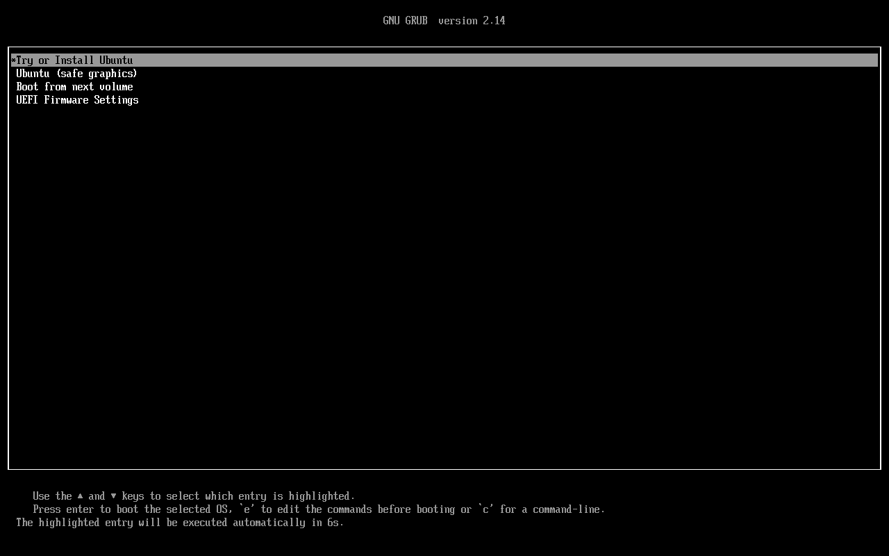
Menu de boot da mídia de instalação.
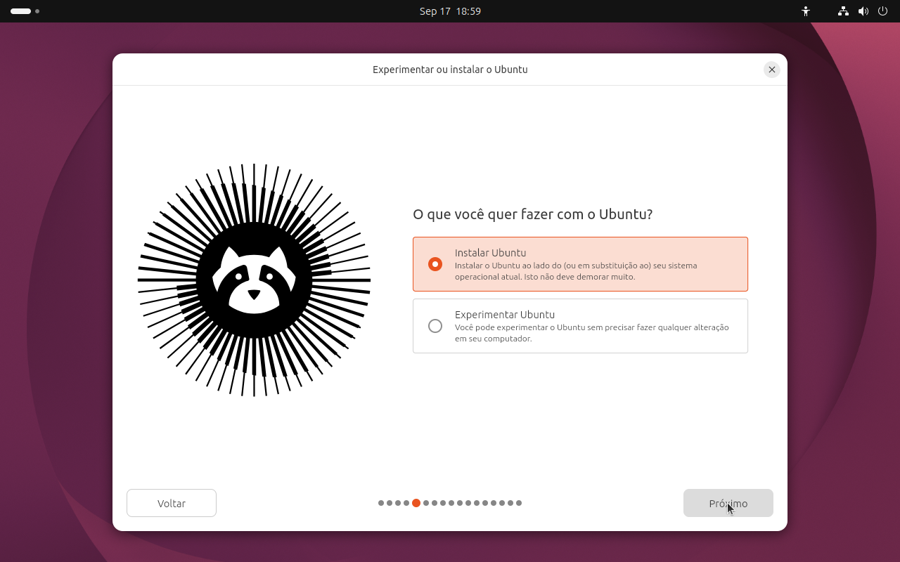
Escolha entre experimentar e instalar o Ubuntu.
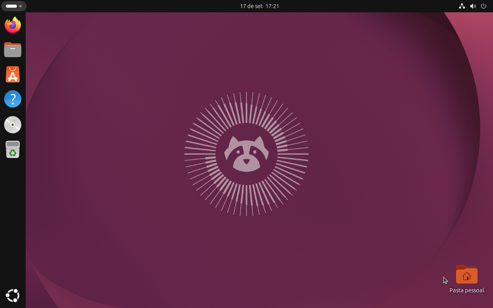
Desktop da sessão live, usado para testar o sistema antes da instalação.
Com o pendrive pronto, reinicie o computador e abra o menu de inicialização. A tecla varia conforme o fabricante; F12, Esc, F9 e F2 são exemplos comuns.
Escolha o dispositivo USB e procure uma opção parecida com Try, Testar ou Experimentar sem instalar.
No modo live, o sistema roda a partir do pendrive. Isso permite conhecer a interface e testar boa parte do hardware sem instalar Linux no disco interno.
ATENÇÃO Em uma sessão live comum, arquivos e alterações feitos durante o teste normalmente não permanecem depois do reinício. Não salve ali a única cópia de nada importante.
ENTENDA O modo live é como visitar uma casa antes de assinar o contrato. Você consegue circular, testar portas e perceber problemas importantes antes de se comprometer.
O que testar
Wi‑Fi e conexão de rede.
Teclado e touchpad.
Som e microfone.
Brilho da tela.
Webcam, se for importante para você.
Bluetooth, se fizer parte do seu uso diário.
Monitor externo, se você depende dele.
Suspensão e retomada, quando possível.
Resolução e comportamento da tela.
A sessão live pode ser mais lenta do que uma instalação real porque o sistema está sendo executado a partir do USB. Algumas funções também podem se comportar de forma diferente. Um recurso que falha no modo live não significa necessariamente que nunca funcionará depois da instalação, mas é um sinal para investigar antes de apagar ou alterar o sistema atual.
SE DER ERRADO Se o computador não iniciar pelo USB, não conclua imediatamente que “Linux não funciona”. Primeiro confira se o pendrive foi criado corretamente, tente outra porta USB e consulte a documentação do fabricante sobre o menu de boot e UEFI.
Teste você mesmo
Antes de instalar, faça este exercício de 10–15 minutos:
confirme que seu backup existe e abra pelo menos dois arquivos da cópia;
anote a URL oficial da distribuição escolhida;
identifique qual arquivo ISO você pretende baixar;
localize o checksum oficial correspondente;
prepare um pendrive sem arquivos importantes;
crie a mídia inicializável;
entre no modo live e teste Wi‑Fi, som, teclado e tela.
Não instale ainda. O objetivo deste exercício é terminar o capítulo com a certeza de que o ambiente está preparado.
Checklist do capítulo
Próximo passo
Agora temos algo muito melhor do que entusiasmo: temos preparação.
No próximo capítulo vamos entrar no instalador e entender cada decisão antes de confirmar. Partições, usuário, senha, criptografia e destino do sistema deixarão de ser telas misteriosas e passarão a ter significado.
DICA DO DEJOTA Chegar ao instalador preparado já é uma vitória. Em instalação de sistema, saber quando não clicar é tão importante quanto saber qual botão apertar.
04
Capítulo 4
Instalação passo a passo
Onde estamos
Você já fez backup, baixou a ISO de uma fonte oficial, verificou o arquivo, criou o pendrive e testou o sistema em modo live.
Agora chegamos à etapa em que mudanças permanentes podem acontecer no disco.
A instalação não precisa ser assustadora, mas exige atenção. As telas desta edição usam Ubuntu LTS como referência visual; nomes e posições dos botões podem mudar entre versões, mas as decisões principais continuam as mesmas.
O objetivo deste capítulo não é ensinar todas as combinações possíveis de dual boot, RAID, múltiplos discos ou particionamento avançado. A ideia é mostrar um caminho seguro para a primeira instalação.
ATENÇÃO Se você ainda não confirmou o backup ou não sabe qual disco pode ser alterado, não avance. Feche o instalador e volte ao capítulo anterior.
O que você vai conseguir fazer
Ao final deste capítulo, você deverá saber reconhecer as principais telas do instalador, entender as decisões que realmente importam e concluir uma instalação simples sem clicar no automático às cegas.
Você também vai saber identificar situações em que o melhor movimento é parar e pesquisar antes de continuar.
Passo 1 — Confirme idioma, teclado e conexão
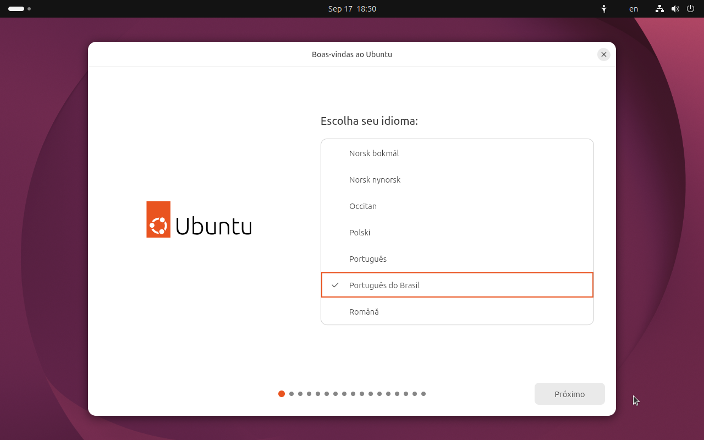
Seleção de Português do Brasil.
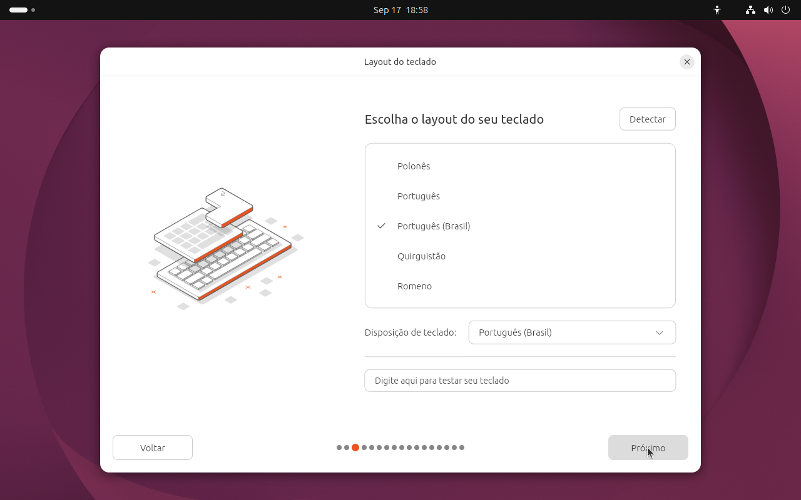
Layout de teclado Português (Brasil).
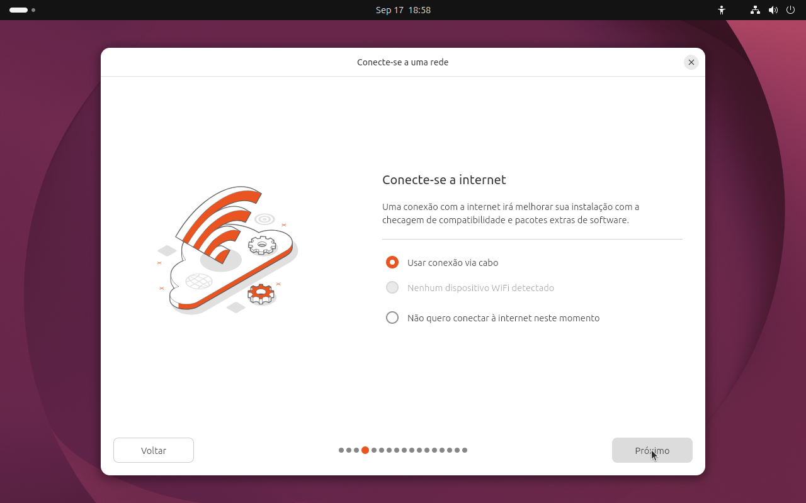
Conexão de rede durante a instalação.
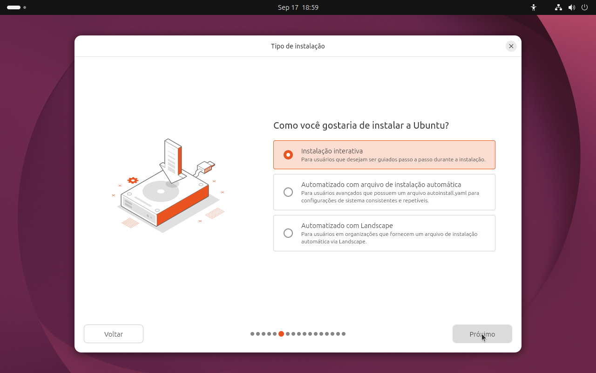
Instalação interativa: caminho usado neste livro.
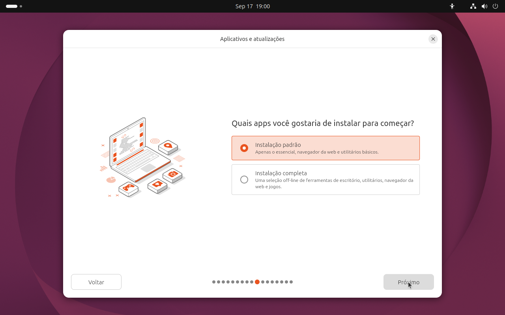
Instalação padrão de aplicativos.
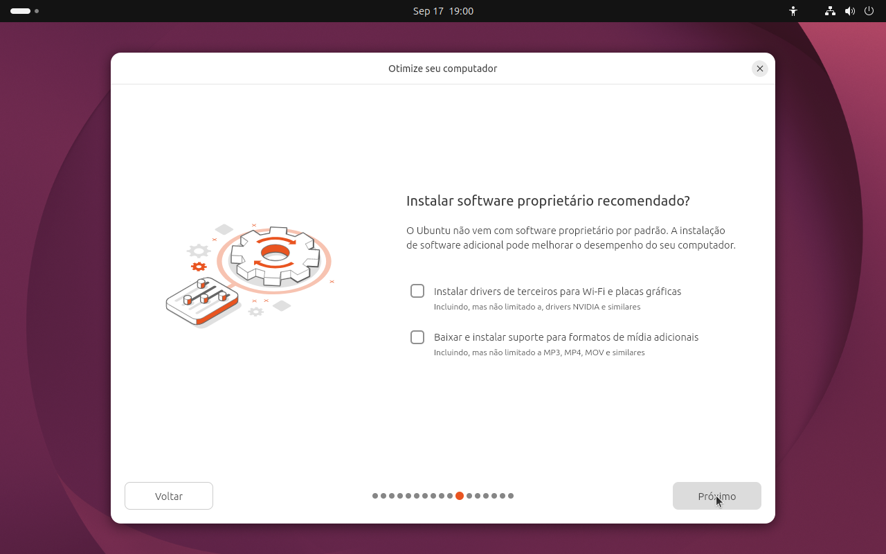
Opções de drivers de terceiros e formatos de mídia.
Comece pelas opções mais simples: idioma, layout do teclado e rede.
Não subestime o teclado. Uma senha forte fica bem menos útil se você descobre depois que símbolos como @, / ou ? estão em posições diferentes do esperado.
Se o instalador oferecer teste de teclado, use. Digite letras, números e alguns símbolos.
A conexão com a internet pode ajudar o instalador a baixar atualizações e componentes, mas nem toda instalação depende dela para começar. Se a rede estiver instável, não transforme isso em motivo para improvisar.
DICA DO DEJOTA Se Wi-Fi, teclado ou vídeo já deram sinais estranhos no modo live, resolva antes da instalação. O instalador não é uma varinha mágica que conserta incompatibilidade sozinho.
PARE AQUI SE… você não sabe qual disco contém seus arquivos atuais, não confirmou o backup ou não entende se a opção escolhida apagará o sistema existente. Feche o instalador e esclareça isso antes de continuar.
Passo 2 — Entenda a escolha mais importante: o disco
Em algum momento, o instalador perguntará onde o Linux será instalado.
Essa é a tela que merece mais atenção de todo o processo.
Você pode encontrar opções como apagar um disco inteiro, instalar ao lado de outro sistema ou configurar o espaço manualmente. Os nomes mudam entre distribuições e versões, mas a lógica é parecida.
ENTENDA O instalador não sabe quais arquivos têm valor emocional ou profissional para você. Ele sabe apenas quais discos e partições existem. A responsabilidade de reconhecer o destino correto continua sendo sua.
Cenário A — Usar o disco inteiro para Linux
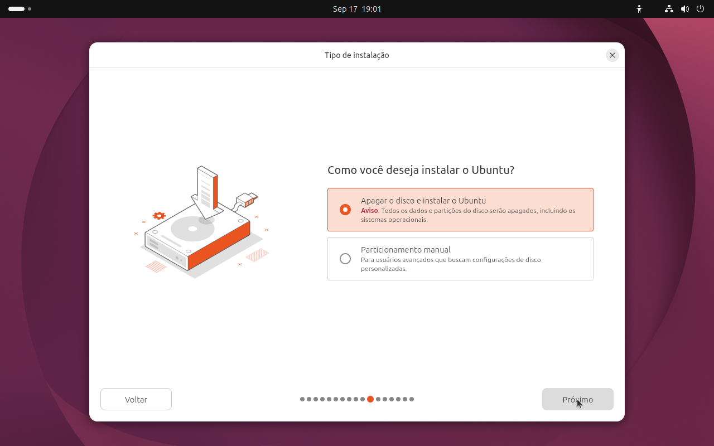
A opção que apaga o disco precisa ser compreendida antes de continuar.
Esse é o cenário mais simples tecnicamente. O disco escolhido será preparado para receber o Linux e o conteúdo anterior poderá ser apagado.
Ele faz sentido quando:
o computador será dedicado ao Linux;
o backup já foi confirmado;
você tem certeza absoluta de qual disco será usado.
ATENÇÃO “Apagar disco e instalar” significa exatamente isso. Não trate essa opção como um botão de teste.
Cenário B — Manter outro sistema
Alguns instaladores conseguem detectar um sistema existente e oferecer instalação ao lado dele.
Isso é conhecido como dual boot: dois sistemas instalados no mesmo computador, escolhidos no momento da inicialização.
Para um iniciante, dual boot adiciona variáveis: espaço em disco, bootloader, criptografia existente, BitLocker, partições de recuperação e atualizações de firmware.
Se o seu objetivo principal é aprender Linux, uma máquina dedicada, um segundo disco ou uma máquina virtual pode ser mais simples do que começar pelo cenário mais complexo. Dual boot não será o fluxo principal desta primeira edição. Se você precisa manter outro sistema no mesmo disco, consulte também a documentação específica da distribuição e do sistema já instalado.
VOCÊ NÃO PRECISA DECORAR EFI, partição de recuperação e bootloader vão aparecer ao longo da jornada. Neste momento, você só precisa reconhecer que mexer em um disco com outro sistema exige atenção extra.
Cenário C — Particionamento manual
O particionamento manual dá mais controle, mas também exige mais conhecimento.
Ele pode ser útil quando você já sabe exatamente como quer organizar partições de sistema, dados, swap e inicialização. Para a primeira instalação, não existe prêmio por escolher a opção mais difícil.
DICA DO DEJOTA Se você chegou ao particionamento manual sem saber explicar o papel de cada partição que pretende criar, volte. Controle sem entendimento é só risco com aparência de experiência.
Passo 3 — Pense na criptografia antes de clicar em instalar
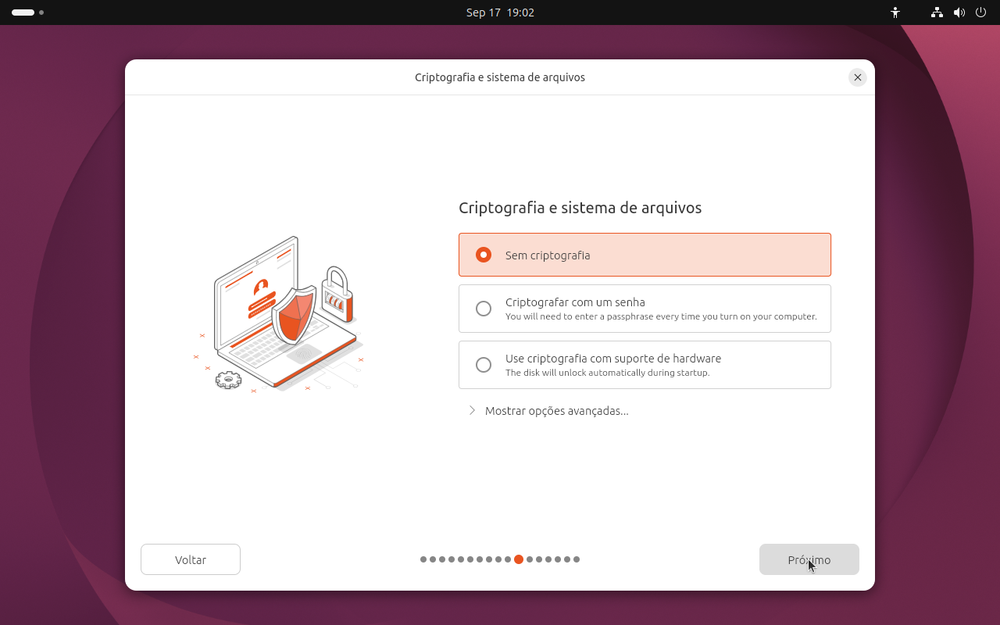
Opções de criptografia e sistema de arquivos.
Algumas distribuições oferecem criptografia do disco durante a instalação.
Criptografia protege os dados armazenados caso o computador ou o disco seja roubado. Dependendo da distribuição e do hardware, ela pode usar uma senha, uma frase secreta, TPM ou outros mecanismos.
A criptografia melhora a proteção, mas cria uma responsabilidade nova: guardar senhas e chaves de recuperação com cuidado. O ponto principal é entender como recuperar o acesso antes de depender dessa proteção.
ATENÇÃO Nunca deixe a única cópia da chave de recuperação dentro do mesmo computador criptografado. Se o sistema pedir essa chave e ela estiver inacessível no próprio disco, você criou um cofre com a chave trancada dentro.
Passo 4 — Crie seu usuário com calma
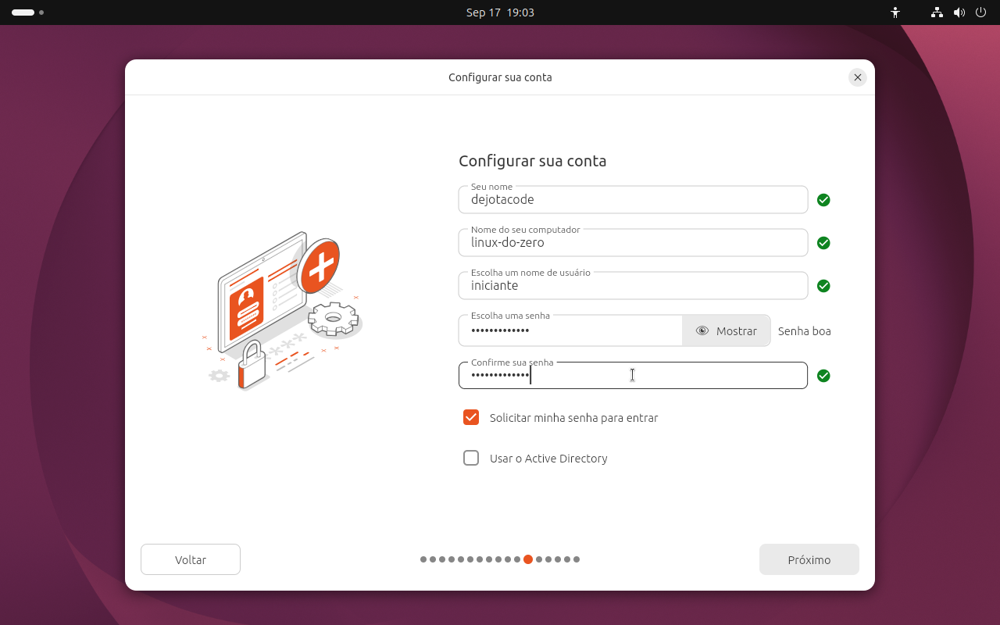
Conta de exemplo com dados fictícios.
O instalador normalmente pedirá um nome, nome do computador, usuário e senha.
A senha da sua conta não deve ser tratada como senha descartável. Em muitas tarefas administrativas, ela será usada para confirmar que você está autorizado a fazer mudanças no sistema.
Evite senhas curtas, previsíveis ou reutilizadas de outros serviços.
Se o instalador oferecer login automático, pense no contexto. Em notebook ou computador compartilhado, exigir senha no login é a escolha mais segura. Login automático só deve ser ativado quando você entende a conveniência e o risco envolvidos.
ENTENDA Sua senha de usuário e uma eventual senha de criptografia podem ser coisas diferentes. Uma libera sua sessão; a outra pode proteger o disco antes mesmo de o sistema iniciar.
Passo 5 — Leia o resumo antes da mudança definitiva
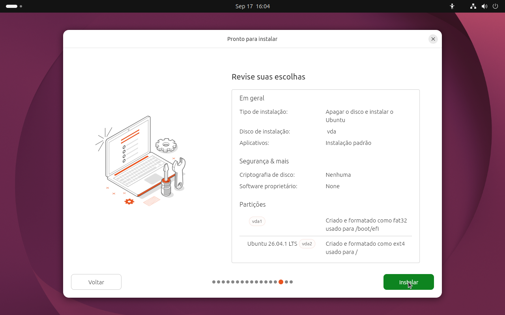
Revise disco, partições, aplicativos e criptografia antes de instalar.
Bons instaladores mostram um resumo antes de alterar o disco.
Esse é o momento de desacelerar.
Confira pelo menos:
o disco selecionado;
se outro sistema será mantido ou apagado;
idioma e teclado;
fuso horário;
usuário criado;
criptografia, se escolhida.
Se algo não fizer sentido, volte. Nenhum instalador sério exige que você continue só porque chegou até ali.
Passo 6 — Deixe o instalador trabalhar
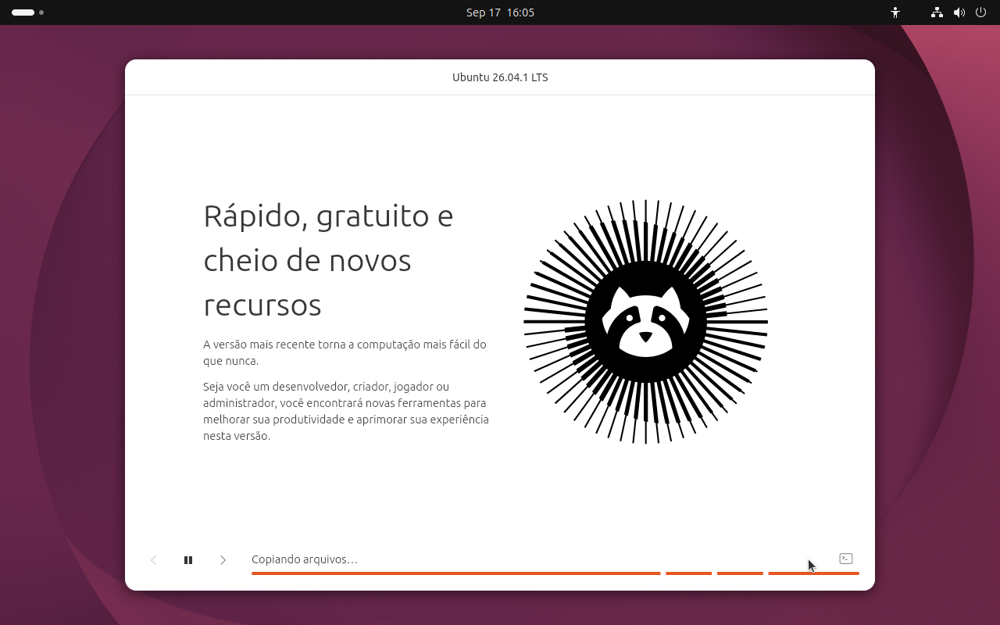
Instalação em andamento: agora é hora de esperar.
Depois da confirmação final, o instalador começa a copiar arquivos e configurar o sistema.
Nessa etapa, evite desligar o computador, remover o pendrive cedo demais ou fechar a tampa de um notebook se isso puder suspender a máquina.
Quando a instalação terminar, o sistema normalmente pedirá para reiniciar e, em algum momento, remover a mídia de instalação.
Siga a mensagem apresentada pelo próprio instalador.
SE DER ERRADO Se o computador reiniciar e voltar ao instalador, verifique se o pendrive continua definido como primeira opção de boot. Removê-lo e reiniciar novamente costuma resolver esse cenário simples.
Passo 7 — O primeiro boot não é hora de correr
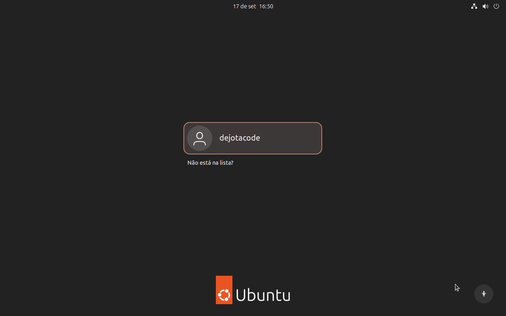
Primeiro boot concluído e tela de login disponível.
Ao entrar no sistema instalado pela primeira vez, confirme três coisas antes de personalizar tudo:
o sistema inicia normalmente;
sua senha funciona;
rede, teclado e vídeo continuam funcionando fora do modo live.
Se você ativou criptografia, confirme também que entende como desbloquear o sistema e onde está guardada a chave de recuperação, quando houver.
Não comece instalando vinte aplicativos imediatamente. Primeiro confirme que a base está saudável. A atualização será o primeiro passo do próximo capítulo.
Erros comuns nesta etapa
Escolher o disco pelo tamanho sem conferir o nome
Dois discos podem ter capacidades parecidas. Compare modelo, capacidade e contexto antes de confirmar.
Tratar “instalar ao lado” como algo sem risco
Dual boot é viável, mas ainda altera a estrutura de inicialização e o uso do disco. Backup continua obrigatório.
Ativar criptografia e ignorar a recuperação
A proteção só é útil se você souber recuperar o acesso de forma legítima.
Fazer particionamento manual para “aprender mais rápido”
A primeira instalação não precisa virar laboratório de armazenamento. Aprender uma coisa por vez é progresso, não limitação.
Teste você mesmo
Antes de considerar o capítulo concluído, responda sem abrir o livro:
Em qual tela da instalação você deve redobrar a atenção?
Qual é a diferença entre usar o disco inteiro e instalar ao lado de outro sistema?
Quando o particionamento manual faz sentido?
O que a criptografia protege?
Onde uma chave de recuperação deve ser guardada?
Quais três coisas você deve verificar no primeiro boot?
Se alguma resposta ainda estiver nebulosa, releia apenas a seção correspondente. Você não precisa repetir tudo.
Checklist do capítulo
Próximo passo
Seu Linux agora está instalado. No próximo capítulo, vamos fazer o que muita gente deveria fazer antes de começar a personalizar o sistema: atualizar, entender onde ficam as configurações, instalar programas com segurança e reconhecer os primeiros elementos da interface.
DICA DO DEJOTA A melhor primeira instalação não é a mais sofisticada. É aquela em que você consegue explicar as decisões que tomou e ainda sabe como recuperar seus dados se algo sair diferente do esperado.
05
Capítulo 5
Primeiros passos depois da instalação
Onde estamos
Seu Linux já está instalado e iniciou pelo disco. Agora começa uma etapa menos dramática, mas muito importante: transformar uma instalação recém-feita em um sistema pronto para uso diário.
O objetivo deste capítulo não é personalizar tudo nem instalar dezenas de programas. Primeiro vamos confirmar que o sistema está saudável, atualizado e confortável para você.
DICA DO DEJOTA Nos primeiros minutos, resista à vontade de mudar tudo. Antes de personalizar, descubra como o sistema já funciona.
O que você vai conseguir fazer
Ao final deste capítulo, você será capaz de:
atualizar o sistema com segurança;
reconhecer as partes principais da interface;
instalar e remover aplicativos por fontes confiáveis;
revisar drivers e periféricos;
organizar uma rotina inicial simples;
reconhecer quando uma mudança pode esperar.
Passo 1 — Faça a primeira atualização
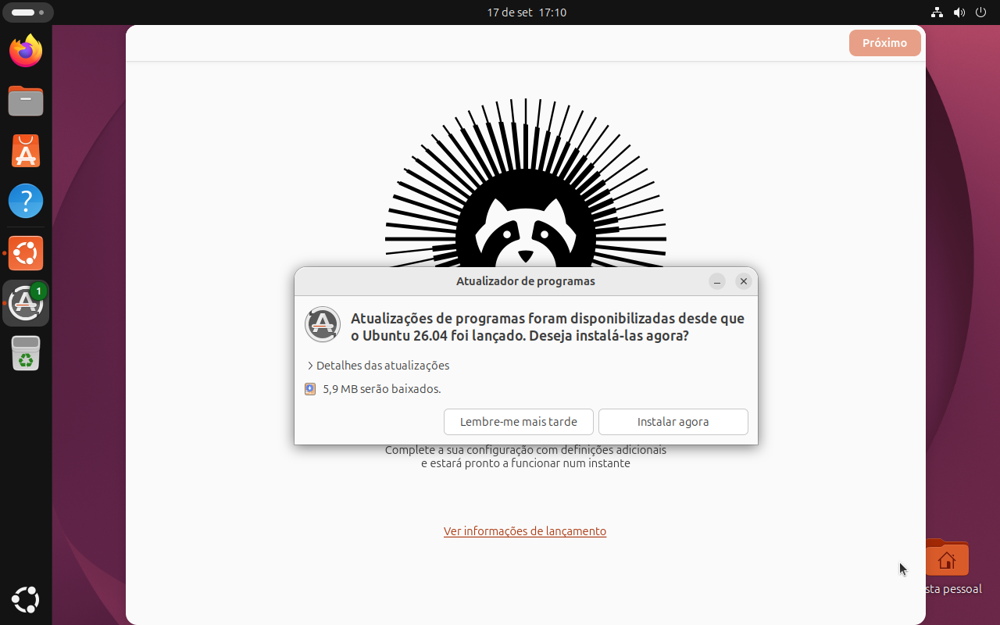
Atualizador de programas indicando atualizações disponíveis.
Uma instalação nova pode usar uma imagem criada semanas ou meses antes. Por isso, depois do primeiro boot, o primeiro hábito saudável é verificar atualizações.
A forma exata muda entre distribuições. Em muitas delas existe uma ferramenta gráfica de atualizações; em outras, você também pode usar o terminal.
ENTENDA Atualizar não significa trocar de distribuição. Na maioria das vezes, significa receber correções de segurança, melhorias e versões compatíveis dos componentes já instalados.
Se a distribuição oferecer uma ferramenta gráfica de atualização, comece por ela. Leia o que será instalado e deixe o processo terminar antes de desligar a máquina. Depois de uma atualização grande, reinicie quando o sistema solicitar ou quando houver uma razão clara para isso.
ATENÇÃO Não interrompa uma atualização importante no meio. Se o sistema estiver trabalhando com pacotes essenciais, desligar à força pode deixar a instalação inconsistente.
Passo 2 — Conheça a interface antes de trocar a interface
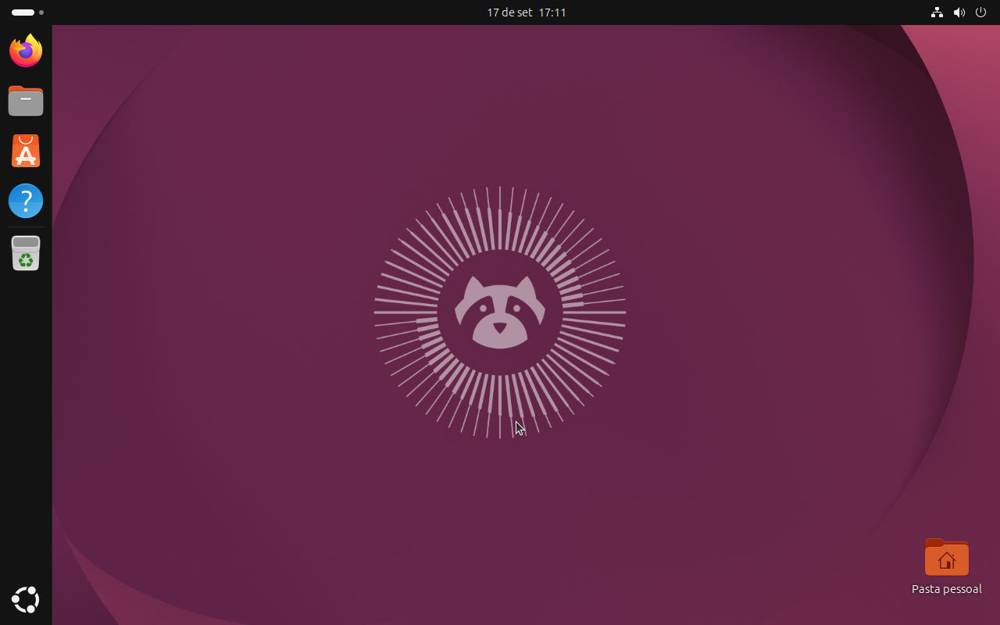
Desktop Ubuntu recém-instalado, ainda sem customizações.
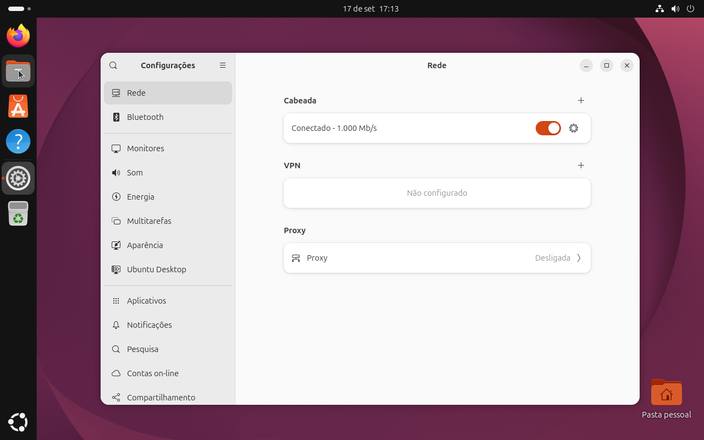
Configurações: ponto central para rede, som, energia e outros ajustes.
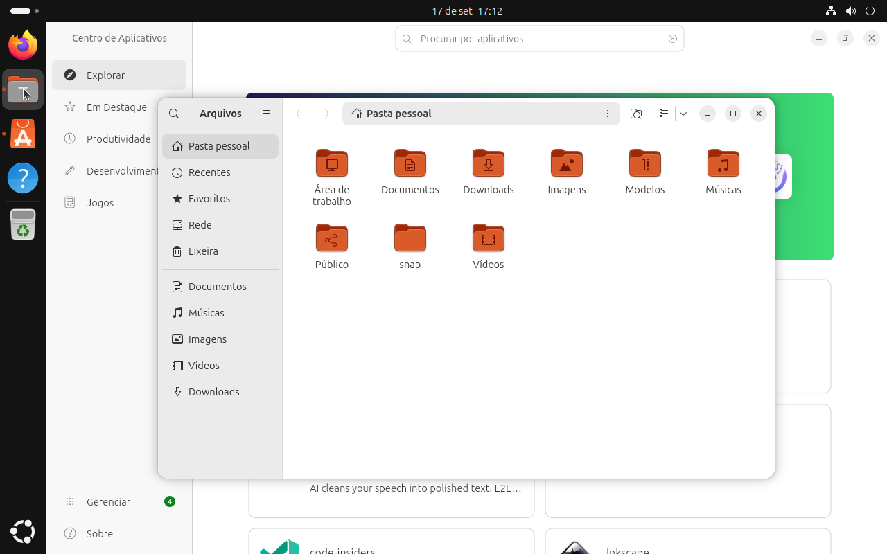
Arquivos mostra a pasta pessoal e as pastas padrão do usuário.
Localize estes elementos no seu sistema:
menu de aplicativos;
área de notificações;
configurações;
gerenciador de arquivos;
central ou loja de aplicativos;
terminal;
opção de desligar/reiniciar.
Abra cada um com calma. O objetivo não é decorar posições, mas descobrir onde procurar.
VOCÊ NÃO PRECISA DECORAR Ambientes gráficos mudam. Saber procurar em “Configurações”, “Aplicativos” e “Arquivos” é mais útil do que memorizar onde um botão fica numa versão específica.
Passo 3 — Instale programas por fontes confiáveis
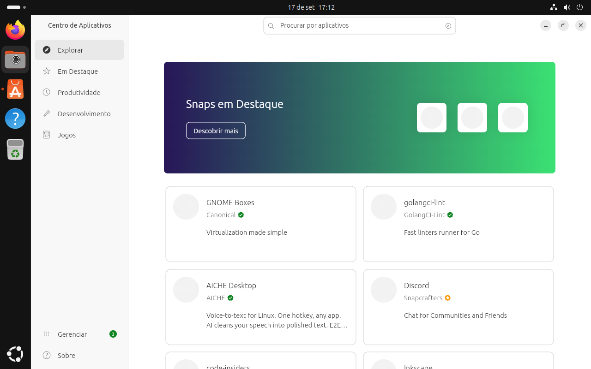
Centro de Aplicativos: caminho gráfico para descobrir software.
Comece pela loja de aplicativos e pelos repositórios habilitados pela distribuição. Quando precisar baixar algo diretamente da internet, prefira o site oficial do projeto. Essa ordem reduz o risco de instalar um arquivo errado, incompatível ou adulterado.
Algumas distribuições também oferecem formatos como Flatpak ou Snap. Eles podem ser úteis, mas você não precisa dominar essas diferenças agora.
ENTENDA Um repositório é como uma prateleira mantida pela distribuição: em vez de procurar instaladores pela internet inteira, o sistema consulta fontes conhecidas e organiza instalação, atualização e remoção.
Evite transformar a pesquisa “baixar programa para Linux” no seu primeiro método. Site oficial e repositório confiável vêm antes de links aleatórios.
Passo 4 — Remover também faz parte de aprender
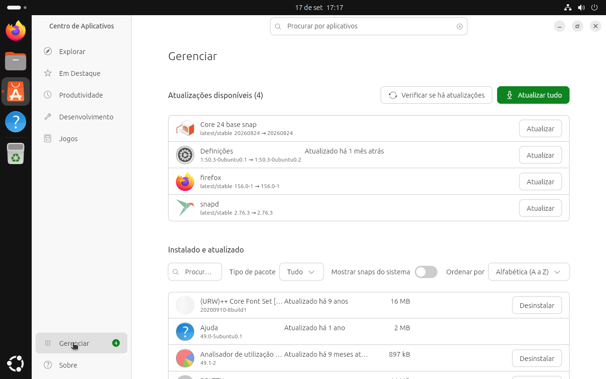
A área Gerenciar mostra aplicativos instalados, atualizações e ações de desinstalação.
Instale um aplicativo simples e, depois de entender como ele aparece no sistema, pratique removê-lo pela mesma ferramenta de software.
Isso ensina uma ideia importante: experimentar não precisa significar acumular programas para sempre.
Passo 5 — Revise hardware e periféricos
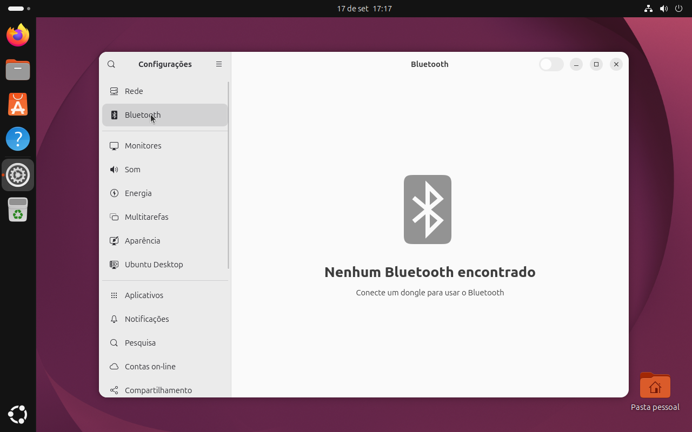
Bluetooth pode mostrar ausência de hardware em ambientes virtuais.
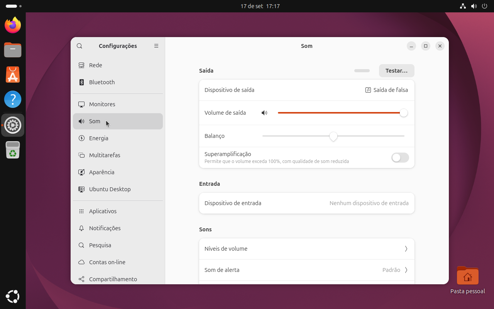
Som: valide saída, volume e entrada no seu próprio hardware.
Confirme novamente:
Wi-Fi e cabo de rede;
áudio e microfone;
Bluetooth, se você usa;
monitor externo;
webcam;
impressora, se for necessária;
suspensão e retorno do computador.
Se tudo funcionou no modo live e deixou de funcionar após a instalação, registre o sintoma antes de sair alterando configurações. Se o Ubuntu oferecer uma ferramenta de drivers adicionais para o hardware detectado, consulte esse caminho antes de procurar scripts ou comandos aleatórios na internet.
SE DER ERRADO Anote o que não funcionou, quando começou e o que você tentou. Um bom diagnóstico começa com uma descrição clara, não com dez mudanças feitas ao mesmo tempo.
Passo 6 — Faça poucas personalizações de cada vez
Trocar papel de parede, tema ou posição do painel é inofensivo na maioria dos casos. Alterar componentes essenciais do ambiente ou instalar extensões desconhecidas já aumenta a complexidade.
Faça uma mudança, observe o resultado e siga adiante só quando souber desfazer. Antes de uma alteração visual maior, uma captura de tela do estado atual pode servir como referência para voltar atrás.
Teste você mesmo
Em 10 minutos:
abra a ferramenta de atualizações e confirme que o sistema está em dia;
localize o gerenciador de arquivos, configurações e terminal;
instale um aplicativo simples por fonte confiável;
abra o aplicativo;
remova-o novamente se ele não for necessário;
teste áudio, rede e suspensão.
Checklist do capítulo
Próximo passo
Seu sistema agora está pronto para uso básico. No próximo capítulo vamos entrar no terminal com outro objetivo: não parecer técnico, mas ganhar precisão e autonomia.
DICA DO DEJOTA Um Linux “pronto” não é aquele cheio de customizações. É aquele em que você sabe atualizar, instalar, remover e encontrar o que precisa sem medo.
06
Capítulo 6
Terminal sem medo: 20 comandos essenciais
Onde estamos
Você já consegue usar o Linux pela interface gráfica. Agora vamos conhecer o terminal como uma ferramenta de precisão: ele permite dizer ao sistema exatamente o que você quer fazer e enxergar resultados de forma clara.
Não existe prêmio por abandonar a interface gráfica. O objetivo é saber usar os dois caminhos.
VOCÊ NÃO PRECISA DECORAR Você não precisa memorizar vinte comandos hoje. Precisa reconhecer para que eles servem e saber onde consultar quando esquecer.
Antes de começar — crie uma área segura
Abra o terminal e descubra onde você está:
pwd
Depois crie uma pasta exclusiva para os exercícios:
mkdir-p ~/linux-do-zero-labcd ~/linux-do-zero-lab
Tudo deste capítulo será praticado dentro dessa pasta sempre que possível.
ATENÇÃO Confira o resultado de pwd antes de executar comandos que movem, sobrescrevem ou removem arquivos.
Como ler um comando
Em muitos casos, você pode pensar na estrutura assim:
comando [opções] [alvo]
Por exemplo:
ls-l projetos
Aqui, ls é o comando, -l é uma opção e projetos é o alvo. Você não precisa decorar essa fórmula; a ideia é perceber que um comando tem partes com funções diferentes.
Os 20 comandos
Navegação
1. pwd — onde estou?
Mostra o caminho da pasta atual.
2. ls — o que existe aqui?
Lista arquivos e pastas. Comece com ls. Depois experimente ls -l para mais detalhes e ls -a para incluir itens ocultos. As opções podem ser combinadas: ls -la.
3. cd — mudar de pasta
cd pasta entra em uma pasta; cd .. sobe um nível; cd ~ volta para sua pasta pessoal.
Criação e arquivos
4. mkdir — criar pasta
mkdir projetos
5. touch — criar arquivo vazio
touch notas.txt
6. cp — copiar
cp notas.txt copia-notas.txt
7. mv — mover ou renomear
mv copia-notas.txt arquivo-renomeado.txt
Leitura e pesquisa
8. cat — mostrar conteúdo curto
cat notas.txt
Use cat para conteúdo curto. Para textos maiores, prefira less.
9. less — ler conteúdo maior
less /etc/os-release
Pressione q para sair.
10. head — ver o começo
head /etc/os-release
11. tail — ver o final
tail /etc/os-release
12. grep — procurar texto
grep NAME /etc/os-release
13. find — localizar arquivos
find ~/linux-do-zero-lab -name"*.txt"
Informações do sistema
14. df — espaço dos sistemas de arquivos
df-h
A opção -h mostra tamanhos em unidades mais fáceis de ler.
15. du — tamanho ocupado por arquivos e pastas
du-sh ~/linux-do-zero-lab
16. free — uso de memória
free-h
17. uname — informações do sistema
uname-r
A opção -r mostra a versão do kernel. uname -a exibe mais informações quando você precisar de um diagnóstico mais completo.
18. whoami — qual usuário está ativo?
whoami
Ajuda e histórico
19. man — manual do comando
man ls
Use as setas para navegar e q para sair.
20. history — histórico recente
history
Dependendo do shell e da configuração, comandos digitados podem ficar registrados. Evite colocar senhas, tokens ou outros segredos diretamente na linha de comando.
E o rm?
Você vai encontrar rm cedo ou tarde. Ele remove arquivos, mas não faz parte da nossa lista principal justamente porque queremos introduzi-lo com cuidado.
Dentro da pasta de laboratório, crie um arquivo descartável:
touch apagar-depois.txt
Confirme que ele existe com ls. Só então remova:
rm apagar-depois.txtls
O segundo ls confirma que o arquivo saiu da pasta. A ideia é praticar a sequência criar → conferir → remover → conferir.
ATENÇÃO Não copie exemplos com rm -r, curingas como * ou sudo rm sem entender exatamente o caminho atingido. No terminal, a lixeira nem sempre participa da história.
O que acabou de acontecer
Você usou o terminal para navegar, criar, copiar, mover, ler, pesquisar e consultar o sistema. Nenhum desses comandos exige “ser programador”. Eles apenas oferecem uma forma textual e precisa de executar tarefas.
Teste você mesmo
Sem olhar o exemplo anterior, tente:
entrar em ~/linux-do-zero-lab;
criar uma pasta chamada desafio;
entrar nela;
criar lembrete.txt;
listar o conteúdo;
copiar o arquivo;
localizar os dois arquivos com find;
conferir quanto espaço o laboratório ocupa.
Se esquecer um comando, consulte. Esse é o exercício.
Checklist do capítulo
Próximo passo
Agora que você sabe se orientar no terminal, vamos entender quem pode ler, alterar ou executar cada arquivo. Isso nos leva a usuários, grupos e permissões.
DICA DO DEJOTA Quando esquecer um comando, não pense “eu não aprendi”. Pense “eu sei o que preciso procurar”. Isso já é autonomia.
07
Capítulo 7
Arquivos, usuários e permissões sem mistério
Onde estamos
Você já sabe navegar pelo sistema e usar comandos básicos. Agora vamos entender uma das ideias mais importantes do Linux: nem todo usuário pode fazer tudo, e nem todo arquivo deve aceitar qualquer alteração.
Permissões existem para limitar danos e organizar responsabilidades.
ENTENDA Pense numa casa compartilhada. Algumas portas são de uso comum, outras pertencem a uma pessoa, e algumas áreas exigem uma chave especial. Permissões são uma forma de dizer quem pode fazer o quê.
O que você vai conseguir fazer
Ao final deste capítulo, você será capaz de:
identificar seu usuário e grupos;
ler permissões com ls -l;
entender leitura, escrita e execução;
alterar uma permissão simples em arquivo de teste;
reconhecer quando sudo é realmente necessário;
evitar permissões excessivas como solução automática.
Passo 1 — Descubra quem você é no sistema
whoamiid
whoami mostra o usuário atual. id mostra também identificadores e grupos associados.
Passo 2 — Leia permissões com ls -l
Entre no laboratório e crie um arquivo:
cd ~/linux-do-zero-labtouch permissoes.txtls-l permissoes.txt
O primeiro caractere indica o tipo do item. Depois vêm três blocos:
permissões do dono;
permissões do grupo;
permissões dos demais usuários.
As letras principais são:
r — leitura;
w — escrita;
x — execução.
Neste primeiro exercício estamos olhando principalmente arquivos. Em diretórios, essas permissões têm efeitos próprios; vamos deixar esse aprofundamento para depois para não misturar conceitos.
VOCÊ NÃO PRECISA DECORAR Leia da esquerda para a direita. Primeiro identifique o dono, depois o grupo, depois os demais. Com prática, a linha deixa de parecer um código secreto.
Passo 3 — Altere uma permissão simples
Vamos tornar um arquivo executável apenas como exercício. Use o editor de texto do sistema para criar, dentro de ~/linux-do-zero-lab, um arquivo chamado ola.sh com estas duas linhas:
#!/bin/shecho"Olá, Linux"
Depois, no terminal:
chmod u+x ola.shls-l ola.sh./ola.sh
chmod u+x significa: adicionar (+) permissão de execução (x) ao usuário dono (u).
ENTENDA Usar a forma simbólica, como u+x, ajuda o iniciante a enxergar a intenção. Números como 755 existem e são comuns, mas não precisam ser seu primeiro idioma de permissões.
Passo 4 — Entenda sudo
sudo permite pedir autorização para executar uma ação com privilégios administrativos quando sua conta está autorizada.
Ele não é um prefixo mágico para fazer comandos “funcionarem”. A senha confirma sua identidade; ela não valida o comando nem garante que ele seja seguro.
ATENÇÃO Se um comando falhou e você não entendeu o motivo, não coloque sudo automaticamente na frente. Primeiro descubra o que ele tenta modificar.
Use a pausa da autenticação a seu favor: releia o comando antes de confirmar. Nem todo comando com sudo é perigoso, e nem todo comando sem sudo é inofensivo. O que importa é entender o que ele faz e onde atua.
Passo 5 — Evite permissões amplas demais
Você pode encontrar na internet soluções do tipo “use chmod 777”. Isso dá leitura, escrita e execução para todos os grupos de permissão naquele item.
Às vezes há cenários técnicos específicos, mas para resolver um erro comum de iniciante quase sempre é um sinal para investigar melhor.
DICA DO DEJOTA A melhor permissão é a menor que permite a tarefa legítima acontecer. Mais acesso não significa mais correto.
Erros comuns
Usar sudo para qualquer erro
Permissão negada pode ter causas diferentes. Elevar privilégios sem entender só aumenta o impacto possível.
Tornar tudo executável
Arquivos de texto, imagens e documentos não precisam de permissão de execução apenas porque “talvez ajude”.
Alterar dono de arquivos do sistema por tentativa
Mudar propriedade pode quebrar expectativas de serviços e pacotes. Você também pode encontrar o comando chown, usado para alterar propriedade de arquivos. Reconheça o nome, mas não o use em arquivos do sistema por tentativa. Pratique mudanças apenas no laboratório.
Teste você mesmo
entre em ~/linux-do-zero-lab;
crie teste-permissao.txt;
use ls -l e identifique dono, grupo e demais;
crie um script simples como o exemplo anterior;
adicione execução apenas ao dono;
confirme a mudança com ls -l;
remova a permissão com chmod u-x ola.sh e observe o resultado.
Checklist do capítulo
Próximo passo
Você já instalou o sistema, aprendeu o terminal e entende permissões básicas. Falta uma habilidade que separa dependência de autonomia: saber investigar problemas sem piorá-los.
DICA DO DEJOTA Segurança não é impedir você de usar o computador. É garantir que cada ação tenha o alcance necessário — e não muito mais.
08
Capítulo 8
Problemas comuns e como procurar solução com segurança
Onde estamos
Você chegou ao ponto em que o Linux já não é mais um sistema desconhecido. Agora precisa aprender algo que nenhum livro consegue evitar: eventualmente alguma coisa não vai funcionar como você esperava.
Autonomia não significa nunca ter problema. Significa saber investigar sem piorar a situação.
ENTENDA Resolver problemas é menos parecido com adivinhar uma senha e mais parecido com investigar uma cena: observe primeiro, altere depois.
O que você vai conseguir fazer
Ao final deste capítulo, você será capaz de:
descrever um problema de forma útil;
coletar informações básicas do sistema;
procurar mensagens de erro com contexto;
avaliar se uma solução encontrada é confiável;
testar uma mudança por vez;
desfazer experimentos quando possível;
saber quando parar e pedir ajuda.
Passo 1 — Transforme “não funciona” em uma descrição
Antes de pesquisar, responda:
O que eu estava tentando fazer?
O que eu esperava que acontecesse?
O que aconteceu de verdade?
Apareceu alguma mensagem de erro?
Isso funcionava antes?
O que mudou desde então?
Uma descrição como “o Wi-Fi cai depois de voltar da suspensão” é muito mais útil que “Linux está com problema na internet”.
Ficha rápida de diagnóstico
Antes de pedir ajuda, tente registrar:
distribuição e versão;
versão do kernel;
modelo do computador ou hardware relevante;
o que você estava tentando fazer;
mensagem exata exibida;
o que mudou recentemente.
Passo 2 — Colete informações sem alterar nada
Alguns comandos de consulta ajudam a entender o ambiente:
uname-rcat /etc/os-releasefree-hdf-h
Eles mostram versão do kernel, distribuição, memória e espaço em disco sem modificar o sistema. Essa diferença é importante: alguns comandos consultam o estado; outros alteram arquivos ou configurações. Antes de executar algo encontrado online, pergunte: “isso só observa ou modifica alguma coisa?”.
DICA DO DEJOTA Antes de mexer, registre o estado atual. Uma captura de tela ou um arquivo de texto com a mensagem original pode economizar muito tempo depois.
Passo 3 — Pesquise a mensagem exata, mas com contexto
Se houver um erro curto, pesquise uma parte distintiva da mensagem junto com o nome da distribuição e, quando fizer diferença, a versão.
Prefira nesta ordem:
documentação oficial;
wiki ou fórum oficial do projeto;
issue tracker ou repositório oficial;
comunidades conhecidas com respostas explicadas;
blogs e vídeos apenas quando a solução puder ser entendida e verificada.
ATENÇÃO Data importa. Uma solução correta para uma versão antiga pode ser inadequada hoje. Compare a versão do seu sistema com a do tutorial.
Sinais de uma solução suspeita
Desconfie quando a instrução:
manda desativar uma proteção sem explicar o motivo;
coloca sudo em tudo;
pede para apagar arquivos do sistema por tentativa;
baixa e executa um script desconhecido diretamente;
não informa para quais versões funciona;
não explica o que será alterado nem como desfazer;
promete “corrigir qualquer Linux” com um único comando.
ATENÇÃO Antes de publicar logs, capturas de tela ou saída do terminal, confira se não há nome de usuário, caminhos pessoais, e-mail, chaves, tokens ou outros dados sensíveis.
Passo 4 — Leia o comando antes de copiar
Quando uma resposta sugerir terminal, pergunte:
esse comando apenas consulta ou também altera?
usa sudo?
remove ou sobrescreve arquivos?
muda permissões?
adiciona um repositório externo?
baixa e executa algo diretamente da internet?
Se você não consegue responder, ainda não está pronto para executar.
VOCÊ NÃO PRECISA DECORAR Você pode consultar man, documentação e explicações antes de executar. Cautela não é insegurança; é método.
Passo 5 — Mude uma coisa por vez
Se você aplicar cinco soluções seguidas e o problema desaparecer, não saberá qual delas resolveu. Pior: pode ter criado outro problema escondido.
Anote cada tentativa e o resultado. Um registro simples já ajuda:
Tentativa
O que mudei
Resultado
Desfiz?
1
Passo 6 — Saiba quando parar
Pare antes de continuar se a solução pedir:
apagar partições;
alterar bootloader sem backup;
desativar proteções que você não entende;
desativar criptografia ou mecanismos de boot sem entender o efeito;
trocar permissões de grandes partes do sistema;
executar script desconhecido como administrador;
remover muitos pacotes essenciais.
Nesses casos, procure documentação melhor ou peça ajuda mostrando exatamente o que já investigou.
SE DER ERRADO Volte à última configuração conhecida, reverta a mudança quando possível e preserve a mensagem original do erro. A pior hora para apagar evidências é justamente quando você precisa entender o que aconteceu.
Problemas comuns de iniciante
Disco cheio
Sintomas podem incluir atualizações que falham ou aplicativos sem espaço para salvar. Verifique primeiro com df -h antes de apagar qualquer coisa.
Aplicativo não abre
Tente iniciar pela interface e, se necessário, procure logs ou execute pelo terminal apenas para observar a mensagem de erro. Não reinstale o sistema inteiro por causa de um programa.
Wi-Fi ou áudio intermitente
Registre modelo do hardware, distribuição, kernel e quando o problema acontece. “Às vezes falha” vira uma investigação muito melhor quando você identifica o gatilho.
Atualização interrompida
Não faça tentativas aleatórias com remoção de pacotes. Procure a documentação da sua distribuição sobre recuperação do gerenciador de pacotes.
Teste você mesmo
Escolha um problema fictício: “o navegador não abre”. Escreva uma investigação sem alterar o sistema:
descreva o resultado esperado;
registre a mensagem exibida;
anote distribuição e versão;
escolha três fontes que consultaria primeiro;
explique quais sinais fariam você rejeitar uma solução encontrada.
Checklist do capítulo
Encerramento da jornada principal
Você começou perguntando o que era Linux. Agora consegue escolher uma distribuição, preparar a instalação, instalar com cuidado, atualizar o sistema, usar o terminal, entender permissões e investigar problemas.
Isso não significa que você “terminou Linux”. Significa algo melhor: você construiu uma base para continuar aprendendo sem depender de copiar passos às cegas.
DICA DO DEJOTA A autonomia não aparece quando você sabe todas as respostas. Ela aparece quando você sabe fazer perguntas melhores, testar com cuidado e reconhecer os limites do que ainda não entende.
B
Bônus
Materiais de consulta e prática
Bônus 1 — Checklist pós-instalação
Use esta lista nas primeiras horas com o sistema.
DICA DO DEJOTA Não tente “otimizar” o sistema antes de saber como ele se comporta no estado normal. Primeiro crie uma referência estável.
Bônus 2 — Checklist de segurança digital básica
Segurança para iniciante não começa com ferramentas sofisticadas. Começa com hábitos consistentes.
ATENÇÃO Linux não torna uma pessoa automaticamente imune a golpes, phishing, senhas fracas ou arquivos maliciosos. O sistema ajuda, mas comportamento continua importando.
Bônus 3 — Folha rápida dos 20 comandos
Comando
Para que serve
Exemplo seguro
pwd
mostrar a pasta atual
pwd
ls
listar arquivos e pastas
ls -la
cd
mudar de pasta
cd ~/linux-do-zero-lab
mkdir
criar pasta
mkdir projetos
touch
criar arquivo vazio
touch notas.txt
cp
copiar
cp notas.txt copia.txt
mv
mover ou renomear
mv copia.txt arquivo.txt
cat
mostrar conteúdo curto
cat notas.txt
less
ler conteúdo maior
less /etc/os-release
head
mostrar o início
head /etc/os-release
tail
mostrar o final
tail /etc/os-release
grep
procurar texto
grep NAME /etc/os-release
find
localizar arquivos
find ~/linux-do-zero-lab -name "*.txt"
df
consultar espaço dos sistemas de arquivos
df -h
du
consultar espaço ocupado
du -sh ~/linux-do-zero-lab
free
consultar memória
free -h
uname
consultar a versão do kernel
uname -r
whoami
mostrar usuário atual
whoami
man
abrir o manual
man ls
history
mostrar histórico de comandos
history
Bônus 4 — Plano de prática de 30 dias
A proposta não é estudar horas por dia. Use sessões de 15–30 minutos e pule dias quando precisar. O importante é voltar.
Semana 1 — Orientação
Dia 1: reveja o que é Linux, kernel e distribuição.
Dia 2: explore menus, configurações e gerenciador de arquivos.
Dia 3: atualize o sistema e leia o que está sendo atualizado.
Dia 4: instale um aplicativo confiável.
Dia 5: remova um aplicativo que não precisa.
Dia 6: teste áudio, rede, Bluetooth e suspensão.
Dia 7: descanso ou revisão.
Semana 2 — Terminal básico
Dia 8: pwd, ls e cd.
Dia 9: mkdir e touch.
Dia 10: cp e mv.
Dia 11: cat e less.
Dia 12: head, tail e grep.
Dia 13: find, df e du.
Dia 14: revisão usando apenas o laboratório.
Semana 3 — Sistema e permissões
Dia 15: free, uname -r, whoami e id.
Dia 16: leia ls -l em arquivos próprios.
Dia 17: pratique chmod u+x e chmod u-x no laboratório.
Dia 18: abra três páginas de manual com man.
Dia 19: revise quando sudo faz sentido.
Dia 20: escreva três riscos de permissões excessivas.
Dia 21: descanso ou revisão.
Semana 4 — Autonomia
Dia 22: descreva um problema técnico fictício com contexto.
Dia 23: colete informações do sistema sem alterar nada.
Dia 24: pesquise uma dúvida usando documentação oficial.
Dia 25: compare uma resposta antiga com a versão atual do sistema.
Dia 26: analise um comando encontrado online antes de executá-lo.
Dia 27: faça uma pequena mudança e registre como desfazer.
Dia 28: revise seu checklist de backup e segurança.
Dia 29: escolha um tema que quer aprender depois.
Dia 30: refaça o checklist final do livro e registre o que hoje parece fácil.
DICA DO DEJOTA Se você perder três dias, não “recomece o desafio”. Continue de onde parou. Aprender tecnologia não precisa virar uma sequência perfeita para funcionar.
Bônus 5 — Recursos confiáveis para continuar
Comece sempre pelos canais do projeto que você está usando. Como esta edição usa Ubuntu LTS como referência visual, a documentação e as notas de versão do Ubuntu serão um ponto de partida frequente. Para Linux em geral, estas categorias são boas referências:
documentação oficial da sua distribuição;
páginas de suporte e notas de versão da distribuição;
manual local acessível pelo comando man;
documentação do kernel em kernel.org quando o assunto realmente chegar ao kernel;
fóruns e comunidades oficiais da distribuição;
DejotaCode para trilhas e tutoriais voltados a iniciantes.
A ArchWiki é uma referência técnica ampla e muito útil, mesmo para quem não usa Arch Linux, mas exige atenção: alguns procedimentos são específicos do Arch. Use-a para entender conceitos e sempre compare com a documentação da sua própria distribuição antes de alterar o sistema.
Como avaliar uma fonte
Antes de confiar, pergunte:
quem publicou?
a página informa versão ou data?
a solução explica o que será alterado?
existe documentação oficial confirmando a ideia?
o procedimento permite desfazer a mudança?
outras fontes confiáveis apontam na mesma direção?
ATENÇÃO Popularidade não é prova técnica. Um vídeo com milhares de visualizações ainda pode ensinar uma solução desatualizada ou arriscada.
Fechamento dos bônus
Use esses materiais como ferramentas de apoio, não como tarefas obrigatórias. O objetivo do livro é fazer você depender menos de listas prontas e mais da sua capacidade de entender, consultar e decidir com segurança.